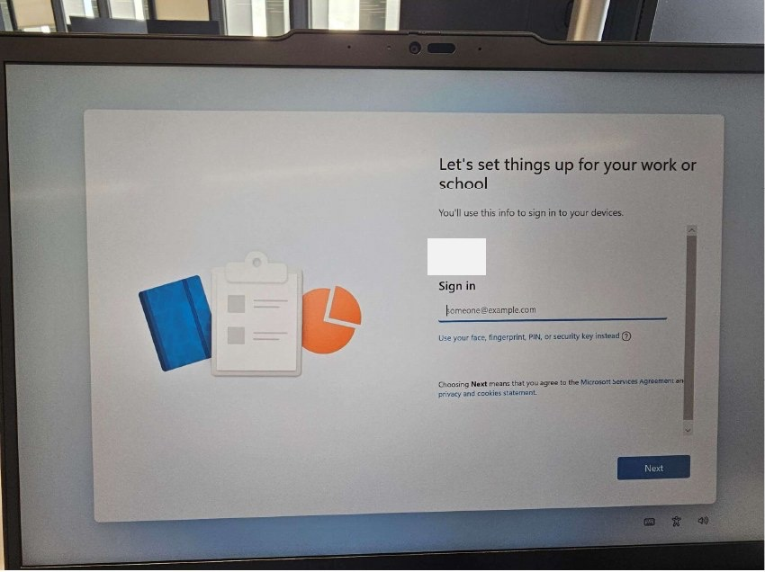

Network rule
Never install or provision the laptop on the corporate network. Use an approved external Wi-Fi, approved guest Wi-Fi, or other approved non-corporate network.
Enterprise technician procedure
A practical English guide for creating a Windows 11 Autopilot installation USB, pre-provisioning a laptop, validating the user setup, and handling older devices that require a hardware hash import.
Never install or provision the laptop on the corporate network. Use an approved external Wi-Fi, approved guest Wi-Fi, or other approved non-corporate network.
Before connecting the user's account, confirm that the user is in the required Autopilot user groups defined by your organization.
When the device and user setup are complete, remove the computer account from the temporary corporate Wi-Fi exclusion group in Intune.
This procedure is intended for technicians preparing organization-managed laptops with a Windows 11 Autopilot ISO and USB media. It covers the DISM-based image workflow, the installation screens, the Autopilot pre-provisioning flow, and the supporting technician USB scripts used to collect hardware hashes and run diagnostics.
The expected end state is a Windows 11 laptop that has completed Autopilot pre-provisioning, has been resealed, and is ready for the assigned user to sign in with MFA.
Windows ADK is not required for normal DISM mounting, driver injection, or
committing a WIM when using the tools already included with Windows. Install ADK
only if you need ADK-specific deployment tools such as oscdimg, WinPE
media creation, or other deployment tooling.
Microsoft reference: ADK installation guide.
Before connecting the user's account during OOBE, verify in Azure that the user is a member of both required groups. Replace the placeholders below with the approved internal group names for your tenant:
<Autopilot all-users group><Regional Autopilot users group>Azure portal: https://portal.azure.com
Intune admin center: https://intune.microsoft.com
Engineers can build the image using DISM when automation is not available or when
full manual control is required. The examples below use the same
C:\Lab_Win11\Trabajo working-folder convention as the recommended
automation path. The example driver folder uses a Lenovo T14, but the same pattern
applies to other supported models.
Download the ZIP from the official GitHub repository and extract it to a local
folder, for example C:\Lab_Win11. Use the Trabajo folder
structure for all deployment payload exactly like this:
C:\Lab_Win11
C:\Lab_Win11\Trabajo\ISOs - Windows ISO files
C:\Lab_Win11\Trabajo\images - boot.wim, install.wim, install.esd or install*.swm
C:\Lab_Win11\Trabajo\Drivers - extracted INF drivers
C:\Lab_Win11\Trabajo\packages - CAB/MSU packagesC:\Lab_Win11\Trabajo\offline and keep it empty before mounting.
Put the original Windows 11 ISO in C:\Lab_Win11\Trabajo\ISOs, then mount
it in Windows. In the mounted ISO, open the sources folder and copy the
image files to C:\Lab_Win11\Trabajo\images.
| From mounted Windows ISO | Copy to Lab_Win11 |
|---|---|
sources\boot.wim |
C:\Lab_Win11\Trabajo\images\boot.wim |
sources\install.wim, install.esd, or all install*.swm files |
C:\Lab_Win11\Trabajo\images\ |
These files are the input for either the Lab_Win11 automation or the manual DISM
commands. The manual examples assume install.wim. If the ISO contains
install.esd or split install*.swm files, use the Lab_Win11
helper flow to prepare the working image, or adjust the DISM commands accordingly.
The technician is responsible for identifying the exact laptop model, finding the correct official driver pack, downloading it, and using it for the image. Use the vendor's official support site, for example Lenovo Support for Lenovo models, Dell Support for Dell models, HP Support for HP models, and so on.
Place the downloaded model-specific drivers in a folder, for example:
C:\Lab_Win11\Trabajo\Drivers\T14dism /Get-WimInfo /WimFile:"C:\Lab_Win11\Trabajo\images\install.wim"
dism /Mount-Image /ImageFile:"C:\Lab_Win11\Trabajo\images\install.wim" /Index:6 /MountDir:"C:\Lab_Win11\Trabajo\offline" /CheckIntegrity/Get-WimInfo before mounting.
Run this command after the image is mounted:
dism /Image:"C:\Lab_Win11\Trabajo\offline" /Add-Driver /Driver:"C:\Lab_Win11\Trabajo\Drivers\T14" /Recurse
Only use this if approved CAB or MSU packages are required. Place them under
C:\Lab_Win11\Trabajo\packages and add them from there before committing
the image.
dism /Image:"C:\Lab_Win11\Trabajo\offline" /Add-Package /PackagePath:"C:\Lab_Win11\Trabajo\packages"dism /Unmount-Image /MountDir:"C:\Lab_Win11\Trabajo\offline" /Commit /CheckIntegrityAfter committing the image, rebuild the deployment media before installing Windows. Use one of these two paths:
Trabajo\ISOs, the updated images from
Trabajo\images, and writes the final ISO back to
Trabajo\ISOs.
sources\boot.wim on the FAT32 boot partition with
Trabajo\images\boot.wim. Replace the install image in the exFAT
partition's sources folder with the updated
Trabajo\images\install.wim or equivalent install.* files.
If you need to generate a new ISO file manually, use oscdimg. This
tool is part of the Windows ADK Deployment Tools. In this workflow, keep
the base Windows ISO in Trabajo\ISOs, keep customized
boot.wim and install.* files in
Trabajo\images, and save the generated ISO back to
Trabajo\ISOs.
Trabajo\ISOs, uses custom images from
Trabajo\images, prepares the temporary media internally, and writes the
final ISO to Trabajo\ISOs.
Use the Microsoft-documented two-partition USB layout below as the primary method. This keeps the boot partition simple and the Windows setup files separate from the large image files. Rufus can still be used as an optional shortcut when you are selecting a prepared ISO, but the resulting USB must match the required structure.
Run the commands one line at a time. First list the disks:
Get-DiskIdentify the USB disk number from the output. The commands below use Disk 5 as an example. If your USB appears as another disk number, replace 5 with the real USB disk number in every command before copying or running it.
Verify the example disk number before wiping anything:
Get-Disk -Number 5 | Format-List Number,FriendlyName,SerialNumber,Size,BusTypeDisk 5 is the USB drive. If the USB is shown as
Disk 2, Disk 3, or any other number, change the number in
every command first. Never run these commands against the internal laptop disk.
Clear-Disk -Number 5 -RemoveData -RemoveOEMSet-Disk -Number 5 -PartitionStyle GPTNew-Partition -DiskNumber 5 -Size 2048MB -AssignDriveLetter | Format-Volume -FileSystem FAT32New-Partition -DiskNumber 5 -UseMaximumSize -AssignDriveLetter | Format-Volume -FileSystem exFATUse two partitions. The first partition is only the UEFI boot starter. The second partition contains the full Windows setup content. Microsoft documents FAT32 as the default WinPE/UEFI boot format and calls out the 4 GB FAT32 file-size limit for Windows images; this guide keeps the boot partition FAT32 and uses exFAT for the larger data partition so technicians can copy files easily from Windows or macOS.
Microsoft references: Create bootable Windows PE media and Use a multi-partition USB deployment drive.
sources folder to the FAT32 partition.
The FAT32 partition should only contain sources\boot.wim. Put the full
sources folder, including the large Windows image file, on the exFAT
partition.
| Partition | Purpose | Copy exactly this content |
|---|---|---|
| FAT32 | Boot partition. This is what the laptop firmware starts from. |
boot\efi\sources\boot.wim onlybootmgrbootmgr.efi
|
| exFAT | Windows setup data partition. This holds the full installer and large image files. |
boot\efi\sources\ full foldersupport\autorun.infbootmgrbootmgr.efisetup.exe
|
clean, the workbench wipe option,
or the Windows Setup delete partitions option.
clean or Clear-Disk. These actions destroy data.


Shift + F10. On laptops where the function row requires the Fn modifier,
press Fn + Shift + F10.





After the user signs in and MFA is complete, validate the laptop before handing it over.
<Temporary corporate Wi-Fi exclusion group>.If you do not have permissions or need clarification, follow the approved company escalation matrix for endpoint engineering support.
Some older laptops are not enrolled in Autopilot by default. Before requesting enrollment, collect the device hardware hash and upload the CSV file to the required location.
AUTOPILOTUSB. The script searches
for this label; if it is wrong, the CSV will not be copied back to the USB correctly.
Run-HWID.cmd or option 4 - HWID Option A from safeworkbench-en.cmd.C:\HWID, downloads/updates Get-WindowsAutopilotInfo from PowerShell Gallery, and exports a CSV.HardwareIDs\<Serial>-HWID.csv on the USB.<approved internal Autopilot HWID upload path>.scripts\Get-WindowsAutoPilotInfo.ps1 workflow downloads or updates
Get-WindowsAutopilotInfo from PowerShell Gallery, so the laptop must
already be connected to an approved Wi-Fi or approved non-corporate network before
running it. It only generates a
local CSV and copies it to the USB; it does not upload the CSV to Intune and does not
enroll the device. If Wi-Fi cannot be connected or the download fails, use Option B.
GetAutoPilot\GetAutoPilot.CMD helper runs from the technician USB
without internet access and saves the CSV in the GetAutoPilot folder.
This project includes the technician USB tools under
tools\technician-usb. Copy the contents of that folder to the root of the
technician USB and keep the folder structure exactly as provided.
tools\technician-usb to the root of the USB.scripts and GetAutoPilot folders next to the CMD files.HardwareIDs at the root of the USB.AUTOPILOTUSB before running HWID capture.safeworkbench-en.cmd as the preferred menu.safeworkbench-en.cmd unless you have a specific reason not to; it requires
typing ERASE before the wipe runs.
| File | Purpose | Notes |
|---|---|---|
safeworkbench-en.cmd |
Recommended technician menu. | English UI. Use this first. Adds a shutdown/restart delay and requires typing ERASE before wiping Disk 0. |
workbench-en.cmd |
Standard technician menu. | English UI. Option 3 wipes Disk 0 through clean_disk0.txt; use carefully. |
Run-HWID.cmd |
Runs the hardware hash capture script. | Calls scripts\Get-WindowsAutoPilotInfo.ps1. Requires approved Wi-Fi/internet access, PowerShell Gallery access, and the USB label AUTOPILOTUSB. |
Run-AutopilotDiagnostics.cmd |
Runs Autopilot diagnostics. | Calls scripts\Get-AutopilotDiagnosticsCommunity.ps1. |
GetAutoPilot\GetAutoPilot.CMD |
Additional second option for hardware hash export. | Custom offline helper. Saves CSV output in the GetAutoPilot folder. It does not upload to Intune or enroll the device. |
tools\technician-usb to the root of the technician USB.
safeworkbench-en.cmd, scripts\, GetAutoPilot\, and HardwareIDs\.AUTOPILOTUSB.safeworkbench-en.cmd.HardwareIDs\<Serial>-HWID.csv on the USB.tools\technician-usb to the root of the technician USB.
GetAutoPilot folder at the USB root.safeworkbench-en.cmd and select B - HWID Option B - Offline GetAutoPilot helper, or open the GetAutoPilot folder and run GetAutoPilot.CMD directly.Get-WindowsAutoPilotInfo.ps1 script.GetAutoPilot folder.tools\technician-usb
safeworkbench-en.cmd
workbench-en.cmd
Run-HWID.cmd
Run-AutopilotDiagnostics.cmd
clean_disk0.txt
scripts\
Get-WindowsAutoPilotInfo.ps1
Get-AutopilotDiagnosticsCommunity.ps1
read_me.txt
GetAutoPilot\
GetAutoPilot.CMD
Get-WindowsAutoPilotInfo.ps1